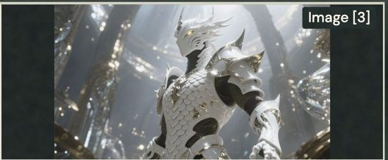
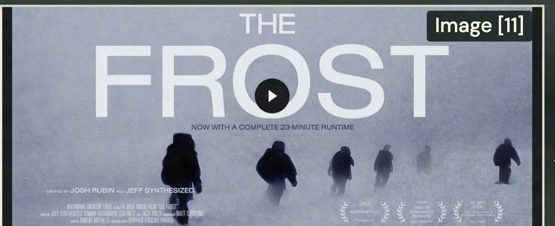
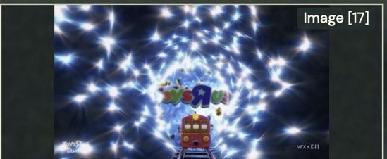
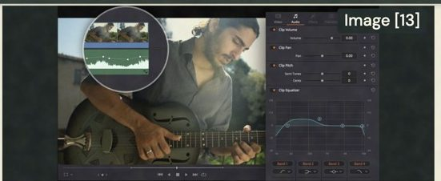

Showing all 26 citations
-




What happens here- A survey of how generative AI is changing filmmaking, from first idea to finished shot.
- Reviews image, video, 3D and audio tools, and how creators chain them into production workflows.
- Flags open problems: keeping characters and scenes consistent, and controlling motion and camera.
[1]
Zhang, R., Yu, B., Min, J., Xin, Y., Wei, Z., Shi, J. N., Huang, M., Kong, X., Xin, N. L., Jiang, S., Bahuguna, P., Chan, M., Hora, K., Yang, L., Liang, Y., Bian, R., Liu, Y., Valencia, I. C., Tredinick, P. M., … Rao, A. (2025). Generative AI for film creation: A survey of recent advances. arXiv. https://doi.org/10.48550/arXiv.2504.08296
Open original source ↗ -
Latent step / 30What happens here
- Runs diffusion in a compressed “latent” space learned by an autoencoder, instead of on raw pixels.
- A U-Net removes noise step by step; cross-attention lets a text prompt steer each step.
- Cuts the computing cost while keeping high-resolution quality — the basis of Stable Diffusion.
[2]
Rombach, R., Blattmann, A., Lorenz, D., Esser, P., & Ommer, B. (2022). High-resolution image synthesis with latent diffusion models. Proceedings of the IEEE/CVF Conference on Computer Vision and Pattern Recognition, 10684–10695.
Open original source ↗ -
What happens here
- Official ComfyUI guide to running Alibaba’s Wan 2.2 video models with ready-made workflows.
- Covers text-to-video and image-to-video: load the models, write a prompt, add a start image.
- A KSampler node generates the clip and Save Video exports it — the screens shown on our poster.
[3]
ComfyUI. (n.d.). Wan2.2 video generation: ComfyUI official native workflow example. ComfyUI documentation. Retrieved November 7, 2026.
Open original source ↗ -
What happens here
- MusicGen: a single Transformer language model that writes music as compressed audio tokens.
- It interleaves several parallel token streams from the EnCodec audio codec, so one stage is enough.
- Music can follow a text description or a given melody; the demo page plays the samples.
[4]
Copet, J., Kreuk, F., Gat, I., Remez, T., Kant, D., Synnaeve, G., Adi, Y., & Défossez, A. (2023). Simple and controllable music generation. Advances in Neural Information Processing Systems, 36. Paper and audio demonstrations.
Open original source ↗ -
What happens here
- An online experiment: writers drafted short stories, some with story ideas from GPT-4.
- AI ideas raised ratings of novelty and usefulness — most of all for less creative writers.
- But AI-assisted stories were more similar to each other: a loss of collective diversity.
[5]
Doshi, A. R., & Hauser, O. P. (2024). Generative AI enhances individual creativity but reduces the collective diversity of novel content. Science Advances, 10(28), eadn5290. https://doi.org/10.1126/sciadv.adn5290
Open original source ↗ -
What happens here
- Studies how Hollywood film workers made sense of generative AI during the 2023 strikes.
- Workers described AI output as “soulless” and linked it to jobs, credit and creative control.
- Shows the AI debate in film is about labour and authorship, not only technology.
[6]
Halperin, B. A., & Rosner, D. K. (2025). “AI is soulless”: Hollywood film workers’ strike and emerging perceptions of generative cinema. ACM Transactions on Computer-Human Interaction, 32(2), 1–27. https://doi.org/10.1145/3716135
Open original source ↗ -
What happens here
- Introduces the Transformer: a model built on attention, with no recurrence or convolution.
- Multi-head attention lets each token weigh every other token, all in parallel.
- Residual paths and feed-forward layers refine each token — the basis of today’s LLMs.
[7]
Vaswani, A., Shazeer, N., Parmar, N., Uszkoreit, J., Jones, L., Gomez, A. N., Kaiser, Ł., & Polosukhin, I. (2017). Attention is all you need. Advances in Neural Information Processing Systems, 30.
Open original source ↗ -
What happens here
- Hugging Face tutorial on causal — left-to-right — language modelling.
- The model predicts the next token using only the tokens that came before it.
- Walks through fine-tuning a small GPT-2 model on text, then using it to generate.
[8]
Hugging Face. (n.d.). Causal language modeling. Transformers documentation. Retrieved November 7, 2026.
Open original source ↗ -
What happens here
- Wan: an open suite of large video-generation models from Alibaba’s Wan team.
- A diffusion Transformer attends across space and time; Wan-VAE compresses video into latents.
- Supports text-to-video and image-to-video; code and model weights are released openly.
[9]
Team Wan. (2025). Wan: Open and advanced large-scale video generative models. arXiv. https://doi.org/10.48550/arXiv.2503.20314
Open original source ↗ -
What happens here
- YouTube’s rules for joining the Partner Program and earning money from videos.
- Channels must meet eligibility thresholds and keep following monetisation policies.
- Mass-produced or repetitive “inauthentic” content is not eligible to earn money.
[10]
Google. (n.d.). YouTube channel monetization policies. YouTube Help. Retrieved November 7, 2026.
Open original source ↗ -
What happens here
- The Frost: a short film built largely from AI-generated imagery.
- Follows an expedition team through a frozen mountain landscape; the official site hosts the film.
- The site lists credits and discloses how AI was used, so viewers know what they’re watching.
[11]
Waymark & Latent Cinema. (n.d.). The Frost. Official film website. Retrieved November 7, 2026.
Open original source ↗ -
What happens here
- Runway’s annual festival celebrating short films made with AI tools.
- The 2024 programme lists “A Tree Once Grew Here” by John and Dara Semerad.
- Shows the range of visual styles artists reach with AI-assisted filmmaking.
[12]
Runway. (2024). AI Film Festival 2024. Festival programme: A Tree Once Grew Here, by John and Dara Semerad.
Open original source ↗ -
What happens here
- Blackmagic Design’s page for the Edit workspace in DaVinci Resolve.
- A multi-track timeline for cutting, trimming and arranging clips, audio and titles.
- Where generated shots, music and dialogue are joined into a finished film.
[13]
Blackmagic Design. (n.d.). DaVinci Resolve: Edit. Official product documentation. Retrieved November 7, 2026.
Open original source ↗ -
What happens here
- The official card for MusicGen: what it is, how it was trained and where it falls short.
- Released in sizes from 300 million to 3.3 billion parameters, for research use.
- The model weights are licensed CC BY-NC 4.0 — no commercial use.
[14]
Meta FAIR. (n.d.). MusicGen model card. AudioCraft documentation. Retrieved November 7, 2026.
Open original source ↗ -
What happens here
- SAG-AFTRA’s report from the first days of the 2023 actors’ strike in Los Angeles.
- Members picketed outside the major studios after contract talks with the studios broke down.
- Protection from AI “digital replicas” was one of the union’s key demands.
-
What happens here
- YouTube requires creators to disclose realistic altered or synthetic content.
- Creators answer a question at upload; YouTube then shows a label in the description or player.
- Clearly unrealistic content, beauty filters or minor edits don’t need a label.
[16]
Google. (n.d.). Disclosing use of altered or synthetic content. YouTube Help. Retrieved November 7, 2026.
Open original source ↗ -
What happens here
- Native Foreign’s case study of the Toys“R”Us brand film, made with OpenAI’s Sora.
- It tells the origin story of founder Charles Lazarus and Geoffrey the giraffe.
- Premiered at Cannes Lions in 2024 as an early AI-assisted commercial film.
[17]
Native Foreign. (2024). Toys“R”Us AI film. Official production case study.
Open original source ↗ -
What happens here
- Summary of the 2023 contract that ended the Writers Guild of America strike.
- AI can’t write or rewrite scripts, and AI output can’t be treated as “source material”.
- Writers may choose to use AI but can’t be forced to; studios must disclose AI material.
[18]
Writers Guild of America. (2023). Summary of the 2023 WGA MBA. 2023 contract campaign.
Open original source ↗ -
What happens here
- Australia’s eSafety guide to image-based abuse: sharing intimate images without consent.
- This covers fake or digitally altered images, such as AI deepfakes, and threats to share them.
- Explains how to report it, so eSafety can help get the content removed.
[19]
eSafety Commissioner. (n.d.). Image-based abuse. Australian Government. Retrieved November 7, 2026.
Open original source ↗ -
What happens here
- U.S. Copyright Office report on AI “digital replicas” of people’s voices and likenesses.
- Finds that existing laws give only patchy protection against unauthorised replicas.
- Recommends a new federal law that protects everyone, not just celebrities.
[20]
U.S. Copyright Office. (2024). Copyright and artificial intelligence, Part 1: Digital replicas. U.S. Copyright Office.
Open original source ↗ -
What happens here
- An experiment that showed people a political deepfake video of Barack Obama.
- Viewers were more often left uncertain than outright deceived.
- That uncertainty lowered their trust in news on social media.
[21]
Vaccari, C., & Chadwick, A. (2020). Deepfakes and disinformation: Exploring the impact of synthetic political video on deception, uncertainty, and trust in news. Social Media + Society, 6(1). https://doi.org/10.1177/2056305120903408
Open original source ↗ -
What happens here
- SAG-AFTRA’s February 2026 statement on ByteDance’s Seedance 2.0 video model.
- It criticises AI clips that use performers’ voices and likenesses without permission.
- Shows the fight over consent continued long after the 2023 strikes ended.
[22]
SAG-AFTRA. (2026, February 13). SAG-AFTRA statement on Seedance 2.0. SAG-AFTRA.
Open original source ↗ -
What happens here
- A U.S. Treasury (FinCEN) alert on criminals using deepfake media for fraud.
- AI-faked images, video and voices are used to beat identity checks and impersonate people.
- Lists red flags so banks can spot and report deepfake-enabled scams.
[23]
Financial Crimes Enforcement Network. (2024, November 13). FinCEN alert on fraud schemes involving deepfake media targeting financial institutions. FIN-2024-Alert004. U.S. Department of the Treasury.
Open original source ↗ -
What happens here
- Apple’s professional video-editing app.
- Its Magnetic Timeline keeps clips in sync as you cut, trim and rearrange them.
- One of the editors the poster names for stitching clips and audio together.
-
What happens here
- Apple’s professional music-production app.
- Record, edit, arrange and mix audio with built-in instruments and effects.
- Named on the poster for finishing the soundtrack.
-
What happens here
- Google Workspace update (March 2026) on new ways to use NotebookLM.
- NotebookLM can turn the sources you upload into video overviews and slide decks.
- Shows AI video as a tool for teaching and demonstrations.
[26]
Google Workspace. (2026, March). New ways to customize and interact with your content in NotebookLM. Google Workspace Updates.
Open original source ↗
Summaries are short plain-English readings of each source. Read the original before relying on a detail. Images marked “as cropped on the poster” are credited to the source shown in the card. Concept animations are original drawings, not figures from the sources.